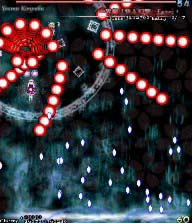

クロスして挟み込むような黄色と水色の弾を撃ち、緑と黄色の似たような弾を出し、赤と青のくさび弾を撃つ。
中ボス時の最初の攻撃と基本的に同じ。避け方も同じ。
左上で待機して開始と同時に「フ」の字に動くと楽になるのも同じ。
ただ、挟み込む丸弾が画面下まで降りてくるのでそこに注意。
獄界剣「二百由旬の一閃 -Easy-」
スローモーションして大きい黒弾が赤弾に分裂する攻撃。
弾の薄い所を探して気合で避けよう。
大きい弾は当たり判定が黒い部分のみと小さいのでさほど気にせず、むしろ小さい赤弾に注意を払うべき。
不安なら決めボムで！！
1,2回目は弾と弾の間隔が他より空いている弾幕の真ん中で避け、
3回目は自機狙いのナイフを投げてくるのでちょっと動いてかわそう。
結構神経を使うので、面倒ならばボムを使おう。
畜趣剣「無為無策の冥罰 -Easy-」

上と下の2方向から弾が襲ってくる攻撃。
一番安全なのは妖夢の真下の位置。個人的に妖夢の弾幕の中で一番楽。
人界剣「悟入幻想 -Easy-」

白い粒状の弾が下から上に迫ってき、妖夢が自機狙いの赤い3WAY弾を放つ攻撃。
自機狙いの赤弾をチョン避けしながら端から端へ移動しよう。
赤弾よりも白弾に注意が必要。
端から端まで行ったら逆方向に切り返そう。困難だったらボム使用。
画像のような上のほうにいると初心者には危険なので、縦の位置は真ん中よりちょっと下ぐらいでチョン避けしよう。
天上剣「天人の五衰 -Easy-」
バラ撒き弾なので気合避けしよう。弾は下か斜め下に向かって進むので、
スロー中にちょっと前に出てみると向かってくる弾が少なくて楽かも。
不安なら決めボムで！！